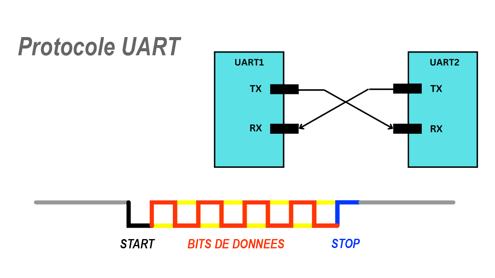
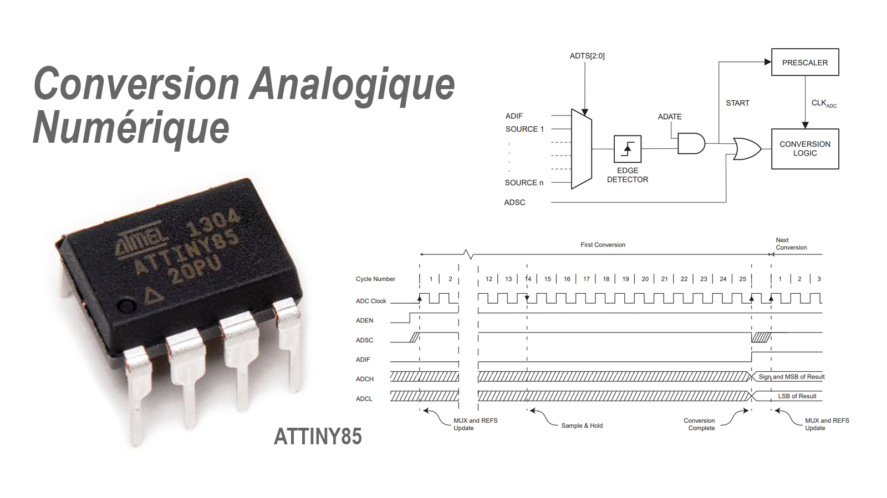
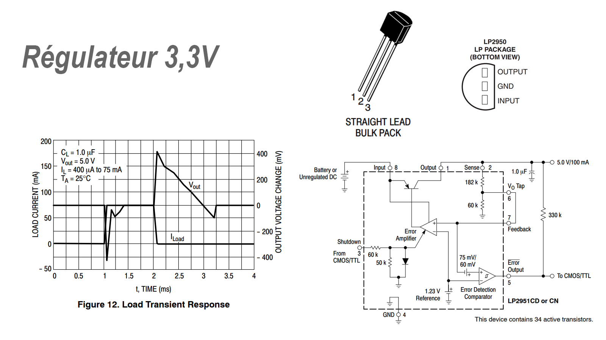
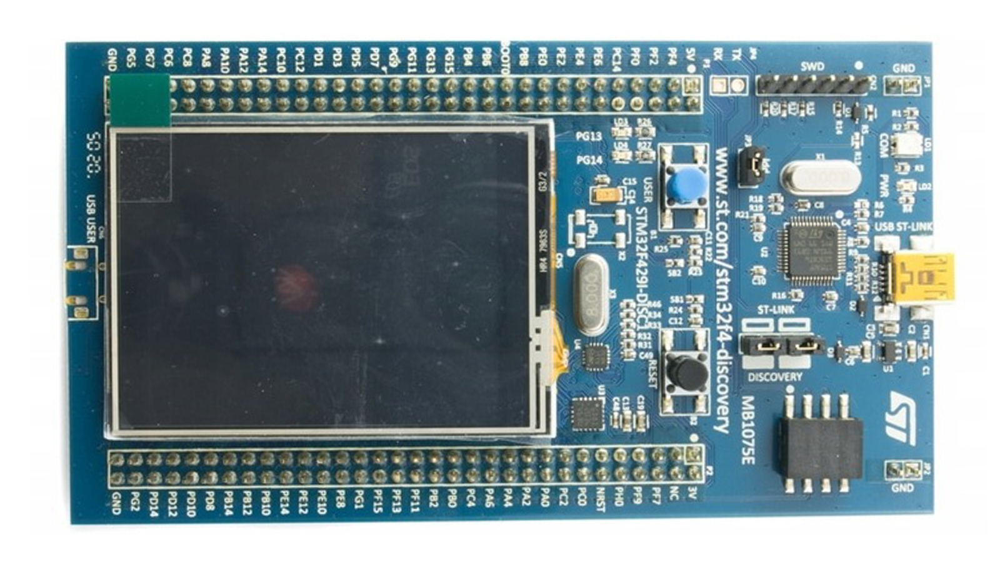

La SAé ou Situation d’Apprentissage et d’évaluation est un ensemble constitué d’une ou plusieurs tâches à réaliser par l’étudiant, en vue d’atteindre le but fixé.
La SAE du semestre 4 vise à continuer la création du stylo-voltmètre, capable de prendre une tension entre 0 et 15 Vdc. Un affichage déporté via une carte STM32 lié par une liaison UART (Universal Asynchronous Receiver / Transmitter) est également mis en place. Pour la Conversion Analogique Numérique, nous utilisons le microcontrôleur maître AtTiny85 (10 bits).
Référentiel |
|
L’objectif de la SAE 4 est de créer un stylo-voltmètre. Le maître est le microcontrôleur AtTiny85 qui peut s’occuper d’une conversion analogique numérique 10 bits. Mais il va également nous servir à envoyer les données via le protocole UART (Universal Asynchronous Receiver / Transmitter). Ce protocole nécessite l’utilisation d’un fil pour les données, comprenant l'adresse, le poids, un mot binaire, une parité et un bit de stop. |
 |
|  |
Pour la conversion analogique numérique, nous utilisons le CAN de l’AtTiny85. Ce CAN est codé sur 10 bits. L'avantage de ce convertisseur est qu'il est déjà intégré au microprocesseur principale. Il n'est donc pas nécessite d'en ajouter un. |
|
La majeure partie de nos microcontrôleurs ont besoins d’une alimentation comprise entre 2,7 V et 5,5 V. Nous avons alors choisi d’utiliser une tension de 3,3 Vdc pour alimenter la carte. Il nous faut donc utiliser un régulateur 3,3 V qui sera le LP XX. |
 |
|  |
Parallèlement, nous avons codé une interface graphique sur le microcontrôleur STM32. Cela a pour but de nous aider à décoder les trames UART du CAN et d’afficher ses valeurs sur l’écran. |
Création du stylo-voltmètre |
|||||||||||||||||||||||
Objectifs |
|||||||||||||||||||||||
Tâche réalisée |
Ressource utilisée |
Traces |
Autoévaluation |
Tester les modules de réception et de transmission :Pour pouvoir programmer l’AtTiny85, il faut créer une carte pouvant recevoir le microcontrôleur, le câble USBASP, une alimentation 3,3V ou 5V… |
C. Duvannaud |
Procédure de testRapport |
L’AtTiny85 est désormais programmable grâce à notre carte. |
Imprimer la carte du stylo-voltmètre :Pour pouvoir programmer l’AtTiny85, il faut créer une carte pouvant recevoir le microcontrôleur, le câble USBASP, une alimentation 3,3V ou 5V… |
KiCad |
SchémasCarte |
Le prototype fonctionne correctement. |
Adapter l'impédance de l'antenne :Pour bien recevoir notre signal, il faut que notre antenne ait une impédance de 50 ohm à 433 kHz. Sinon, le signal pourrait rebondir et nous perdrons l'information. |
C. Duvannaud |
Résultats |
Le prototype fonctionne correctement. |
Créer une liaison UART :Il faut réfléchir aux bits de données et aux adresses. On a choisi de scinder les 10 bits de trame en 2 x 5 bits. |
UART |
Tests |
Le prototype fonctionne correctement. |
Afficher les mesures sur le STM32, via une nouvelle interface graphique :Pour la réception, nous allons toujours afficher nos valeurs sur l’écran du STM32. Toutefois, le protocole de réception n'est plus le même et il faut l'adapter. |
TP Timer |
InterfaceTests |
Le prototype fonctionne correctement. |
Consignes |
Lien vers les consignes du projet. |